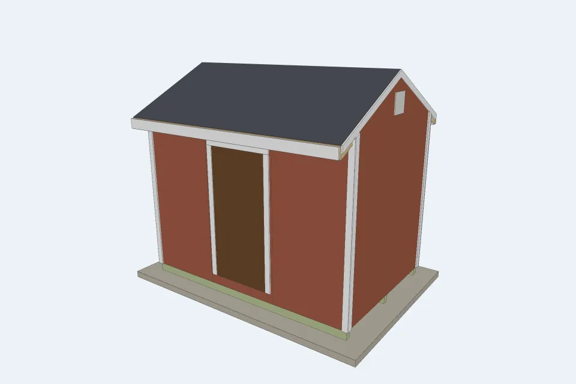
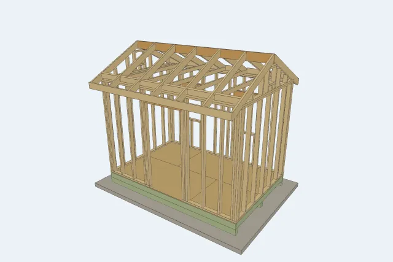

If you are building your own backyard shed, the usual answers are a rule of thumb ("about one stud per foot of wall") or a plan set that lists boards but not how to cut them. Neither tells you that the jack studs beside a 38" door are 80-1/2" long, or that a 6/12 rafter for an 8 ft wide shed with a 12" overhang needs a board at least 69" long once the plumb cut is allowed for.
Open Shed Designer and drag out your shed: it frames every board at its real size and hands you the plans, a cut sheet and the order.


The tool's "8x12 classic" preset (pick it under + New design), which you can change in a few drags: 12 ft along the ridge, 8 ft across the gable, 8 ft walls (91-1/2" studs under three 1-1/2" plates), a 6/12 roof with a 12" overhang, a single 38" x 82" door on one 12 ft side, two 24" x 36" windows on the other 12 ft side, and a 12" x 12" vent in each gable. 2x4 walls at 16" on centre, a pressure-treated 2x6 floor at 16" on three 4x6 skids over a gravel pad, and 2x6 rafters at 24" with 2x4 rafter ties.
| Board | Qty | What it becomes |
|---|---|---|
| PT 4x6 x 12' | 3 | skids |
| PT 2x6 x 8', 12' | 12 | ten 93" floor joists and the two rim joists |
| 2x8 x 12' | 1 | ridge board (one size deeper than the rafters, and deeper than the 6-1/8" plumb cut) |
| 2x6 x 8', 12' | 17 | fourteen 69" rafters, the door and window headers, the sub-fascia and the blocks between rafters over the walls |
| 2x4 x 8', 12' | 65 | studs, plates, kings, jacks, cripples, sills, rafter ties, gable studs, vent framing |
That is 143 framing pieces from 98 boards. At the prices the tool starts with, the cut sheet's boards cost $668.10, and no way of cutting those pieces from those board lengths can cost less than $667.97: the tool proves that bound by solving the problem's linear relaxation. With a few spare boards for culls the lumber comes to $747.73. Those prices are mostly Home Depot listings seen on 2026-10-29, each linked in the shopping list; the few with no readable listing (the gravel, for one) say "estimate". The whole shed before sales tax, with sheet goods, siding, paint, shingles, trim, gravel, fasteners and sealants, comes to $3,203.80. That leaves out the door and the two windows, which this preset frames at custom sizes: the tool lists them as "not in the total" until you pick a unit (the listed shed windows start at $47.75 and the prehung doors at $246.00) or choose to build the door on site. Type your yard's prices and the order re-optimises.
The numbers on this page are what the tool prints for these designs at its starting prices, and a test recomputes every one of them, so the page cannot drift from the tool. Its tests also check the front wall's studs, jacks, header and cripples by hand, check that no piece floats and no two boards overlap, and check every member against snow and wind loads. None of that replaces checking your own design.
The tool opens on a different 8x12: a 78" (6'6") door, a ridge beam instead of ties, and a wish to keep the peak under 8 ft so the siding does not look tall. It sets the walls as low as the door allows: 78" + a 5-1/2" 2x6 header + three 1-1/2" plates = 86-1/2". Then it looks for the steepest roof under the limit, and here it finds none. Even a 3/12 roof would put the peak 9' 10-3/8" above the gravel, so it says so. It picks 4/12, the lowest pitch at which the gable vents still fit beside the beam post (peak 10' 2-3/8"), and a 9" overhang: any longer and the 60-3/8" rafters start costing more lumber. Its structure check puts the two-ply 2x10 ridge beam at 79% of capacity under 30 psf of snow; every other member is under 30%.
At the listed prices an 8 ft 2x4 is $4.15 and a 16 ft one is $13.17, so a stud costs less from its own 8 ft board even though it wastes 4-1/2". Two studs from a 16 ft board waste only about 8-3/4", but cost more. The answer flips when your yard prices long boards closer to per-foot. So the tool tries every stock length you tick, packs the pieces longest first into the tightest board, shrinks each board to the cheapest length that still holds its cuts, and keeps the cheapest plan. By default it buys nothing longer than 12 ft, about what a pickup bed carries with the tailgate down: plates, rims, skids and the ridge board are spliced at that length, and a longer board is bought only for a piece that cannot be spliced, with the cut sheet saying which piece needs it. You can set the limit from 8 ft to no limit. The cut sheet then lists each board with its marks (A, B, C...) so you can cut at the saw and find each piece on the wall drawings.
The tool frames simple gable sheds on skids: no lofts, hip or shed (single-slope) roofs, ramps, porches or concrete slabs. Its structure check is a screening check of the kind a span table encodes; it does not check connections, uplift, racking or the foundation, and it is not a code review. If your shed needs a permit, your building department or a designer who can stamp drawings is the right next stop. A shed kit or a prebuilt shed is the faster answer if you would rather not cut at all.